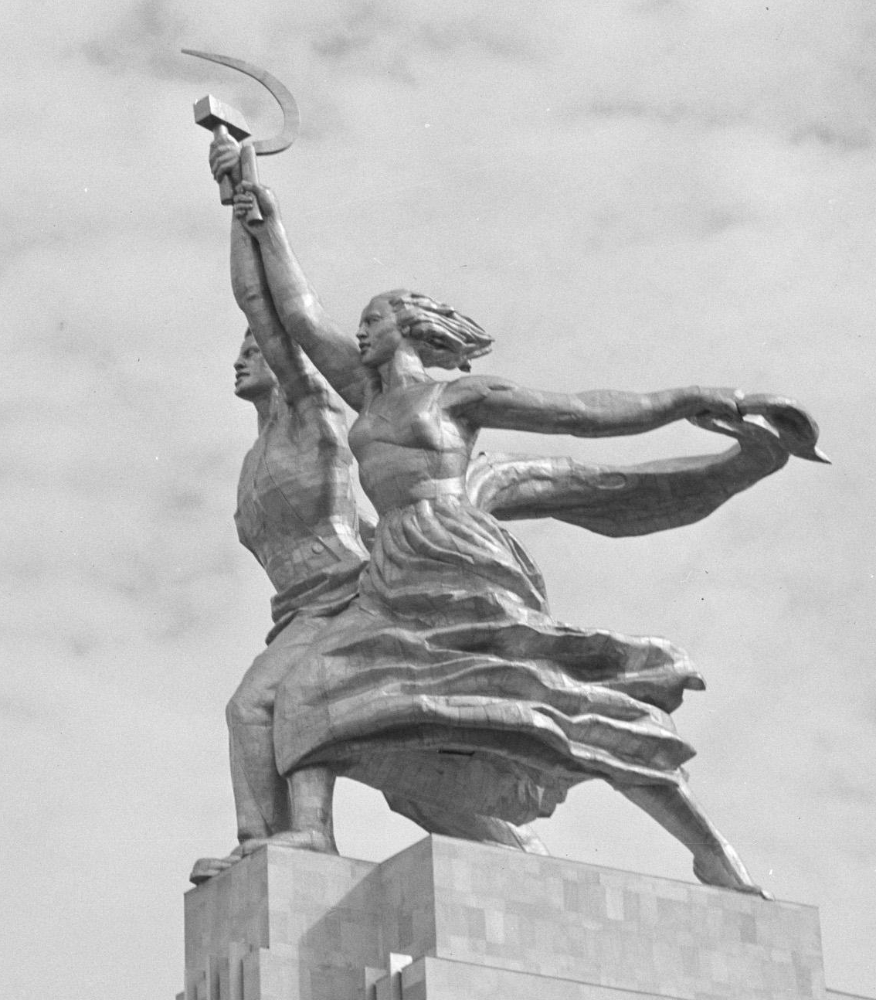

Midterm Review. Part 2. Decolonizations and Soviet National Policy.
Popular Sovereignty, fighting nation
4 waves of decolonization
Soviet national policy
Iconography of the Soviet Empire

Fig.1. Worker and Collective Farm Woman (1937) sculptor Vera Mukhina